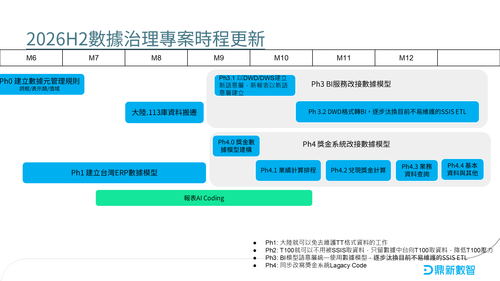
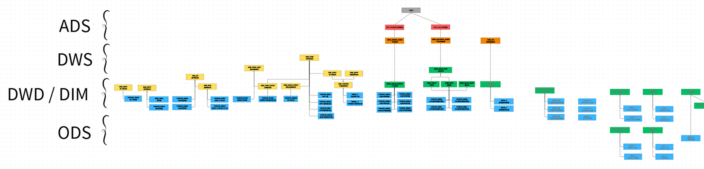
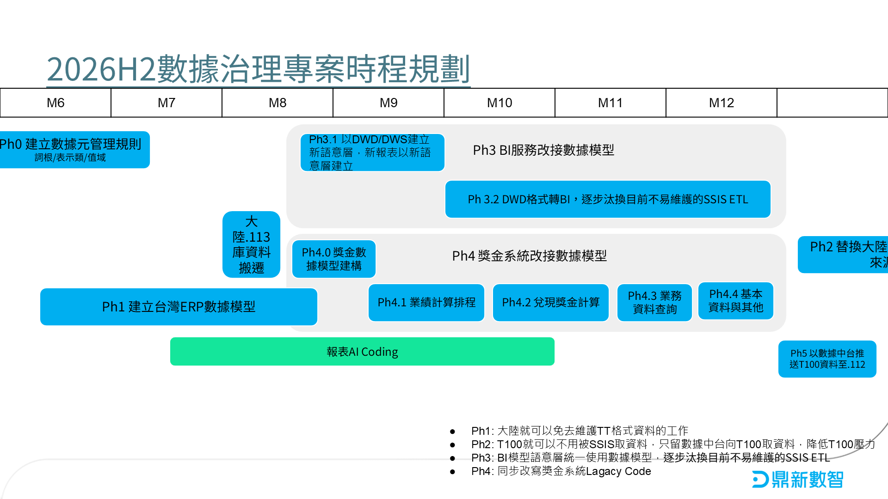

簽約訂單
dwd_so100%
- 模型設計
- 數據建模
- 數據測試
→ · 已完成
2026/09/03｜建模進度、時程更新、獎金 Table、BI 盤點、分層架構｜附：2026H2 原時程
01
簽約訂單已完成；出貨已逾目標日｜三階段：設計 → 建模 → 測試｜截至 2026/09/03
100%
→ · 已完成
83%
→ · 測試進行中／已逾期
50%
→ · 建模進行中
17%
→ · 設計進行中
0%
→ · 尚未開始
區間 2026/07/28–09/18｜藍虛線＝報告日 09/03
02
原稿截自 Weekly_Report 第 3 頁；點標題可開試算表

03
必要主表 9 張皆自 84.CRM_NT 遷往數據中台；依時程安排分三波｜點標題開原檔
基本資料
2 表 · 9/21–9/25
| 主題 | 主 Table（原） | 遷移 | 時程 |
|---|---|---|---|
| 規劃師基本資料檔 | MONKR |
84.CRM_NT數據中台 | 9/21–9/25 |
| 業績異常調整明細檔 | MONJZ |
84.CRM_NT數據中台 | 9/21–9/25 |
業績計算
2 表 · 9/21–9/25
| 主題 | 主 Table（原） | 遷移 | 時程 |
|---|---|---|---|
| 出貨業績計算檔 | MONKO |
84.CRM_NT數據中台 | 9/21–9/25 |
| 沖款業績計算檔 | MONKO_OOA |
84.CRM_NT數據中台 | 9/21–9/25 |
獎金計算
3 表 · 9/28–10/2
| 主題 | 主 Table（原） | 遷移 | 時程 |
|---|---|---|---|
| 收款兌現檔 | MONTK |
84.CRM_NT數據中台 | 9/28–10/2 |
| 出貨單業績計算收款兌現檔 | MONKW |
84.CRM_NT數據中台 | 9/28–10/2 |
| 規劃師獎金檔 | MONKK |
84.CRM_NT數據中台 | 9/28–10/2 |
統計數據
2 表 · 10/5–10/9
| 主題 | 主 Table（原） | 遷移 | 時程 |
|---|---|---|---|
| 業務主管業績統計檔 | MONLE |
84.CRM_NT數據中台 | 10/5–10/9 |
| 規劃師業績統計 | MONME |
84.CRM_NT數據中台 | 10/5–10/9 |
來源：獎金系統必要Table盤點.xlsx｜區間 2026/09/21–10/09｜三波施工
04
三張 BI 盤點依主題拆解語意層與主表｜點標題開原檔
簽約
8 列
| 主題 | 細節主題 | 主 Table（原） | 遷移 | 主 Table（新） |
|---|---|---|---|---|
| 簽約明細 & 統計 | 產品線簽約行業簽約同期產品簽約統計、明細、同期產品類別簽約統計、同期 | — | — | 待定 |
| 簽約同期比 | 今年簽約明細 | BIPI |
84.DSCBI數據中台.訂單 | 待定 |
| 今年無訂單出貨明細 | BIPJ |
84.DSCBI數據中台.出貨 | 待定 | |
| 去年簽約明細 | TCF.BIPI_ALL |
150.TCF150.TCF | 待定 | |
| 去年無訂單出貨明細 | TCF.OMAB_ALL |
150.TCF150.TCF | 待定 | |
| 已簽約未出貨&已出貨未開發票明細表 | 已出未開明細 | BIPJ |
84.DSCBI數據中台.訂單 | 待定 |
| 已簽未出明細 | BIPI |
84.DSCBI數據中台.出貨 | 待定 | |
| 已簽約未出貨年月期別明細表(發票收入)及(出貨管帳) | — | DSCCJ_BOM_NO_WORK |
84.ITAS— | 待定 |
出貨
20 列
| 主題 | 細節主題 | 主 Table（原） | 遷移 | 主 Table（新） |
|---|---|---|---|---|
| 出貨統計&明細 | 產品類別產品營收統計四大ERP新老客統計 | BIPJ |
84.DSCBI數據中台.出貨 | 待定 |
| 出貨統計&明細(發票收入) | 產品類別(發票)產品營收統計(發票)業務人員排名 | BIPJ |
84.DSCBI數據中台.出貨 | 待定 |
| 訂單出貨每月25日前簽回比率(發票收入) | 出貨 | BIPJ |
84.DSCBI數據中台.出貨 | 待定 |
| 簽約 | BIPI |
84.DSCBI數據中台.簽約 | 待定 | |
| 無訂單出貨 | BIPJ |
84.DSCBI數據中台.出貨 | 待定 | |
| 預估 | TT_PIPJPM_PER |
84.DSCBI— | 待定 | |
| 預算 | BIPJ_PER |
84.DSCBI— | 待定 | |
| 產品線實際預算比(發票收入) | 實際 | BIPJ |
84.DSCBI數據中台.出貨 | 待定 |
| 預算 | BIPJ_PER |
84.DSCBI— | 待定 | |
| 業務員簽約出貨統計表(報表作法需要討論，目前執行速度不快) | 簽約 | BIPI |
84.DSCBI數據中台.出貨 | 待定 |
| 出貨 | BIPJ |
84.DSCBI數據中台.出貨 | 待定 | |
| 銷售彙總分析表(報表做法可以再討論) | 出貨 | BIPJ |
84.DSCBI數據中台.出貨 | 待定 |
| 預算 | BIPJ_PER |
— | 待定 | |
| 簽約出貨發票狀況表(簽約出貨發票狀況表2雷同) | 年發票 | BIPJ |
84.DSCBI數據中台.出貨 | 待定 |
| 年銷售 | BIPJ |
84.DSCBI數據中台.出貨 | 待定 | |
| 年已出未開 | BIPJ |
84.DSCBI數據中台.出貨 | 待定 | |
| 年簽約 | BIPI |
84.DSCBI數據中台.出貨 | 待定 | |
| 年已簽未出 | BIPI |
84.DSCBI數據中台.出貨 | 待定 | |
| 年已簽未出明細 | BIPI |
84.DSCBI數據中台.出貨 | 待定 | |
| 年已出未開明細 | BIPJ |
84.DSCBI數據中台.出貨 | 待定 |
應收帳款
24 列
| 主題 | 細節主題 | 主 Table（原） | 遷移 | 主 Table（新） |
|---|---|---|---|---|
| 收款明細表(嚴謹) | 收款 | BIOOB |
84.DSCBI— | 待定 |
| 應收帳款合理率 | 應收帳款 | BIAR |
84.DSCBI— | 待定 |
| 出貨收入(含稅) | OMAB_FILE_2024_OMA |
84.DSCBI_2024— | 待定 | |
| 條件前一年度(取年度值) | AR_IN |
84.DSCBI_2024— | 待定 | |
| 應收帳款年月期別明細表 | — | BIARM |
84.DSCBI— | 待定 |
| 營收&帳款現況-2025原則 | 期初帳款 | BIARM |
84.DSCBI— | 待定 |
| 營收預算 | BIPJ_ACTMJ7_2025_PER |
84.DSCBI_2024— | 待定 | |
| 實際營收_出貨 | OMAB_FILE_2024_OMA |
84.DSCBI_2024— | 待定 | |
| 實際收款 | BIOOB |
84.DSCBI— | 待定 | |
| 當月開當月收 | OMA_FILE_TT |
84.DSCBI— | 待定 | |
| 承諾收款 | TT_PIPJPM_PER |
84.DSCBI— | 待定 | |
| 出貨立帳_出貨 | OMAB_FILE_2024_OMA |
84.DSCBI_2024— | 待定 | |
| 出貨立帳_上月出貨 | OMAB_FILE_2024_OMA |
84.DSCBI_2024— | 待定 | |
| 實際營收_上月沖款 | OMAB_FILE_2024_OOA |
84.DSCBI_2024— | 待定 | |
| 期初帳款_150天以上 | BIARM |
84.DSCBI— | 待定 | |
| 150天以上長天期沖款 | OMA_FILE_TT |
84.DSCBI— | 待定 | |
| 當期帳款 | BIARM |
84.DSCBI— | 待定 | |
| 顧問價值交付物明細表顧問價值交付物明細表(秘書) | — | BI_CRMHT |
84.DSCBI— | 待定 |
| 立帳當月&一個月&兩個月&五個月&六個月內收款明細表 | — | OMAB_FILE_2024_OMA |
84.DSCBI_2024— | 待定 |
| — | OMA_FILE_TT |
84.DSCBI— | 待定 | |
| — | BIARM_OOB |
84.DSCBI— | 待定 | |
| 立帳當月&一個月&兩個月&五個月&六個月內收款明細表_產品線&營收類別 | — | OMA_FILE_TTOMAB_FILE_TTOAG_FILE |
84.DSCBI— | 待定 |
| 立帳60天&150天&180天內收款明細表 | — | — | — | 待定 |
| 立帳30天&60天&90天&120天&150天&180天內收款明細表_產品線&營收類別 | — | — | — | 待定 |
05
原稿截自 Canva〈目前資料分層〉｜點標題開原圖

附
原稿截自 Weekly_Report 第 2 頁；點標題可開試算表
